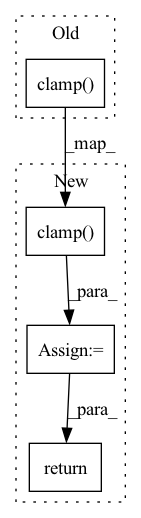

Pattern ID :843

Before Change
self.model = model
def forward(self, score, label):
return -torch.sum(torch.log(torch.clamp(score, 1e-10, 1.0)) * torch.clamp(label, 0.0, 1.0) + \
torch.log(torch.clamp(1-score, 1e-10, 1.0)) * torch.clamp(-label, 0.0, 1.0))
After Change
self.model = model
def forward(self, score, label):
pos = torch.log(torch.clamp(score, 1e-10, 1.0)) * torch.clamp(label, 0.0, 1.0)
neg = torch.log(torch.clamp(1-score, 1e-10, 1.0)) * torch.clamp(-label, 0.0, 1.0)
num_pos = torch.sum(torch.clamp(label, 0.0, 1.0), -1)
num_neg = torch.sum(torch.clamp(-label, 0.0, 1.0), -1)
loss = - torch.sum(torch.sum(pos, -1)/num_pos) - torch.sum(torch.sum(neg, -1)/num_neg)
return loss
In pattern: SUPERPATTERN
Frequency: 3
Non-data size: 4
Instances
Fragment ID: 2643624
Project Name: zjukg/neuralkg
Commit Name: 46a6149625e179eb2add8b8055322826cbce0766
Time: 2022-04-01
Author: wenzhang2015@zju.edu.cn
File Name: src/neuralkg/loss/CrossE_Loss.py
M Class Name: CrossE_Loss
N Class Name: CrossE_Loss
M Method Name: forward(3)
N Method Name: forward(3)
M Parent Class: nn.Module
N Parent Class: nn.Module
M File Name: src/neuralkg/loss/CrossE_Loss.py
N File Name: src/neuralkg/loss/CrossE_Loss.py
M Start Line: 14
M End Line: 15
N Start Line: 14
N End Line: 19
'>
Before Change
//-----------------------------------------------------------//
// 计算置信度的loss
//-----------------------------------------------------------//
tobj = torch.where(y_true[..., 4] == 1, giou.detach().clamp(0), torch.zeros_like(y_true[..., 4]))
else:
tobj = torch.zeros_like(y_true[..., 4])
loss_conf = torch.mean(self.BCELoss(conf, tobj))
After Change
//-----------------------------------------------------------//
// 计算置信度的loss
//-----------------------------------------------------------//
loss_conf = torch.sum(self.BCELoss(conf[y_true[..., 4] == 1], giou.detach().clamp(0))) + \
torch.sum(self.BCELoss(conf, y_true[..., 4]) * noobj_mask)
loss_cls = torch.sum(self.BCELoss(pred_cls[y_true[..., 4] == 1], self.smooth_labels(y_true[..., 5:][y_true[..., 4] == 1], self.label_smoothing, self.num_classes)))
loss = loss_loc * self.box_ratio + loss_conf * self.balance[l] * self.obj_ratio + loss_cls * self.cls_ratio
num_pos = torch.sum(y_true[..., 4])
num_pos = torch.max(num_pos, torch.ones_like(num_pos))
return loss, num_pos
def get_near_points(self, x, y, i, j):
sub_x = x - i
'>
Fragment ID: 2643625
Project Name: bubbliiiing/yolov5-pytorch
Commit Name: d49e041b6f4ef50c5d94ce88d33d147f3227bc77
Time: 2022-01-15
Author: 47347516+bubbliiiing@users.noreply.github.com
File Name: nets/yolo_training.py
M Class Name: YOLOLoss
N Class Name: YOLOLoss
M Method Name: forward(4)
N Method Name: forward(4)
M Parent Class: nn.Module
N Parent Class: nn.Module
M File Name: nets/yolo_training.py
N File Name: nets/yolo_training.py
M Start Line: 158
M End Line: 198
N Start Line: 156
N End Line: 200
'>
Before Change
def forward(self, x): // pylint: disable=arguments-differ
Forward prop
return x.clamp(min=self.min_val, max=self.max_val)
class Scaler(nn.Module):
After Change
def forward(self, x): // pylint: disable=arguments-differ
Forward prop
x = x.clamp(min=self.min_val)
return x.clamp(max=self.max_val)
class Scaler(nn.Module):
'>
Fragment ID: 2643615
Project Name: maximintegratedai/ai8x-training
Commit Name: 8ce4fe52769a91606196184ee6a8e827cbd039da
Time: 2022-08-15
Author: robert.muchsel@maximintegrated.com
File Name: ai8x.py
M Class Name: Clamp
N Class Name: Clamp
M Method Name: forward(2)
N Method Name: forward(2)
M Parent Class: nn.Module
N Parent Class: nn.Module
M File Name: ai8x.py
N File Name: ai8x.py
M Start Line: 190
M End Line: 190
N Start Line: 190
N End Line: 191